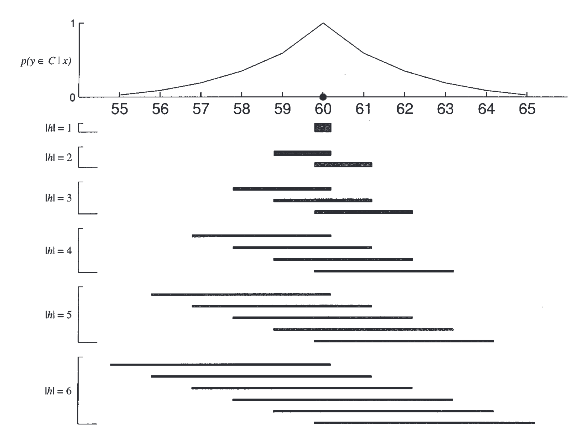
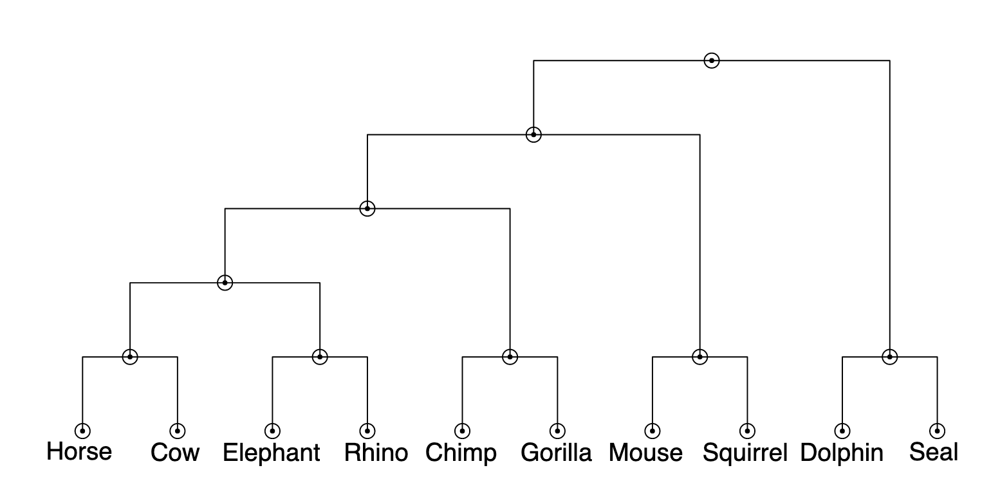
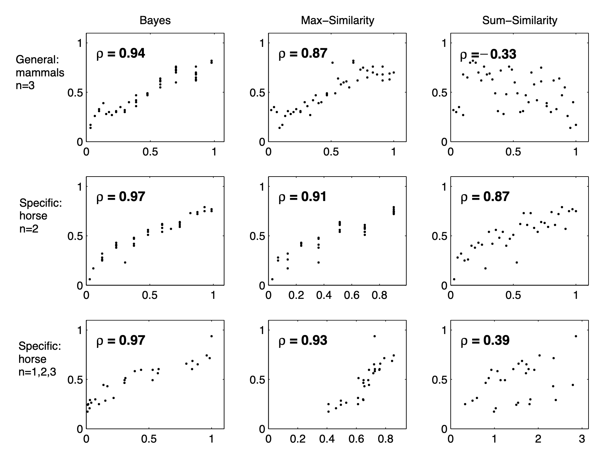

3 Generalization
In the last chapter, you learned that much of cognition is about making inferences. A common inference we’re faced with involves generalizing examples of things to new cases.
- A child hears a brand new word and has to figure out which objects that word applies to.
- You eat one candy from an assorted box and then try to guess what the others might taste like.
- You remember that your friend liked doing crosswords during a weekend trip at the cabin one time, so you guess they might like a book of puzzles as a gift (generalizing their interests).
How can we apply Bayesian inference to these kinds of problems?
3.1 Healthy hormone levels 💉
The following example comes from a 2001 paper by Josh Tenenbaum and Thomas Griffiths1
The basic problem: You learn the value of a healthy hormone level (say, 60) that varies on a scale from 1 to 100 (integers only). What is the probability that another value (say, 70) is also healthy?
3.1.1 Setting up a model
3.1.1.1 The hypothesis space
To start with, we’ll assume that healthy values lie in a contiguous interval. Using the term from the paper, this interval is the consequential region \(C\).
The hypothesis space consists of all possible consequential regions. For example, [0,100], [10,19], and [44,45], are all valid hypotheses. The full hypothesis space is every valid interval between 0 and 100.
3.1.1.2 Prior
How much weight should we assign to each hypothesis? We might have reason to favor shorter intervals over longer ones, for example. In the paper, they use an Erlang prior. Alternatively, for simplicity of calculation, we could again assume a uniform prior distribution, placing equal weight on all hypotheses, like we did in the previous chapter. This is tantamount to making no prior assumptions about which intervals are most probable.
3.1.1.3 Likelihood
Suppose you learn that a healthy patient has a hormone level of 60. What was the likelihood of observing this value, assuming we know which hypothesis is correct? That is, what is \(P(x = 60 | h)\). It depends on how we assume the patient was chosen.
3.1.1.3.1 Weak vs. strong sampling
Under weak sampling, we assume that each observation was sampled from the full range of possibilities, and it was just a coincidence that we happened to get one from the consequential region (a healthy patient). If that’s true, then the probability of getting any particular value doesn’t depend on which hypothesis is true:
\[ P(x|h) = \frac{1}{L} \]
where \(L\) is the length of the range of possible values (100 in our case).
Under strong sampling, we assume that each observation was specifically chosen as an example of the consequential region \(C\). In other words, someone chose a healthy person and tested their hormone levels as an example for you. In this case, the probability of seeing a particular value depends on the size of the region:
\[ P(x|h) = \begin{cases} \frac{1}{|h|} & \text{if } x \in h \\ 0 & \text{otherwise} \end{cases} \] where \(|h|\) is the size of \(h\), i.e., the number of values contained in \(h\). If you have multiple observations \(X = \{x_1, x_2, \ldots, x_n \}\), then \(P(X|h) = (1/|h|)^n\). This is because we will assume each sample is independent like a coin flip.
The result of the strong sampling assumption is the size principle: among hypotheses that include all of the observed examples, those that are smallest will receive higher posterior probability because they will have higher likelihoods.

3.1.1.4 Posterior
We can now simply apply Bayes’s rule to compute the probability of each hypothesis, given an observation (or set of observations).
\[ P(h|X) = \frac{P(X|h) P(h)}{\sum_{h_i} P(X|h_i) P(h_i)} \]
3.1.2 Generalizing
We aren’t quite finished. Remember that we really want to know the probability of some new value \(y\) also being a healthy hormone level. But at this point all we have done is assign a probability to each interval being the consequential region.
What we want to do is essentially a two-step process:
- For each hypothesis \(h\), check to see if \(y\) is in it.
- If it is, check how probable it is that \(h\) is the consequential region \(C\), given our observations \(X\).
This basic idea is sometimes known as hypothesis averaging because we don’t actually care which hypothesis is the right one, so we’ll just average over all hypotheses, weighted by how probable they are. Specifically, we’ll compute:
\[ P(y \in C|X) = \sum_h P(y \in C | h) P(h | X) \]
The second term on the right is what we computed earlier using Bayes’s rule.
What about the first term? This time, we’ll assume weak sampling because there’s no reason to assume that this new value \(y\) was chosen to be a healthy value or not.
3.1.3 Homework 2: Finish the details

I haven’t provided all the details for this model because your assignment is to finish the implementation yourself, run some simulations, and collect a small amount of real data to compare the model to.
3.2 The number game 🔢
In most domains, requiring concepts to be restricted to contiguous intervals is not realistic. Numbers are one example. Consider the space of possible number concepts you could make up for integers between 1 to 100. In addition to concepts like “numbers between 20 and 50”, there are many other plausible concepts like “multiples of 10”, “even numbers”, or “powers of 3”.
Consider the following problem: You are given one or more examples \(X\) of numbers that fit some rule and you want to know how probable it is that a new number \(y\) also fits the rule.
The model we discussed before can be naturally extended to this problem. For the likelihood, we can make the same strong sampling assumption as before.
The prior is where things get a little trickier. Intuitively, some concepts like “even numbers” seem more probable than concepts like “multiples of 7”. This now becomes a psychological question: Which rules will people find to be more intuitively plausible? There is no single way to decide this, but we could run a survey to find out: Give people a long list of rules and ask them to judge how intuitively natural they seem. We could then construct a prior probability distribution using this data.
Alternatively, we could come up with some definition of “complexity” in hypotheses and assume that less complex hypotheses will receive higher prior probability.
Once we have chosen a prior probability distribution \(P(h)\), we can now proceed just as we did before.
3.3 Inductive generalizations about animal properties 🐴
Now let’s consider an even more complex generalization problem, based on a 2002 paper by Neville Sanjana and Josh Tenenbaum2. This is the problem of generalizing properties from a set of example animals to other animals. The paper uses the following example:
Chimps have blicketitis
Squirrels have blicketitis
--------------------------
Horses have blicketitisThe way to read this is as follows: The premises state that chimps and squirrels have blicketitis. The conclusion is that horses have blicketitis. The inductive generalization question is how probable is the conclusion given the premises? Intuitively, the conclusion in this example seems more plausible than the conclusion in the following example:
Chimps have blicketitis
Gorillas have blicketitis
--------------------------
Horses have blicketitisThe interesting psychological question is why is it that some generalizations seem more intuitively plausible than others?
3.3.1 Hypothesis space
This problem is conceptually similar to the ones we’ve already been discussing. You want to infer what animals have blicketitis after seeing some examples of animals that blicketitis. The first question to answer is: What is the analogue of a consequential region for this problem? Animals don’t naturally fall on a one-dimensional interval so we’ll need to define a different hypothesis space. One possibility is a hierarchy, which naturally captures the knowledge people have about animals.
3.3.1.1 Clustering
The paper first creates a hierarchy of eight animals using similarity data collected from people. Specifically, they asked people to judge how similar all pairs of eight animals were and then calculated the average similarity judgment for each animal.
These similarity judgments can be used to construct a tree using a simple clustering algorithm. The algorithm works as follows:
- Put all animals in their own cluster.
- Where there is more than one cluster that hasn’t been placed in a group, do the following:
- Identify the pair of clusters with the greatest similarity between them.
- Group those clusters into their own new cluster.
There are several approaches for computing the similarity between two clusters that contain multiple animals. For example, you might use the maximum similarity between any pair of individual animals in the two clusters.
The results of this algorithm can be represented as a tree, shown below. Each node in the tree represents a cluster. The hypotheses we will consider will be any combination of 1, 2, or 3 of the clusters determined using the clustering algorithm.

3.3.2 The model
We can now define the model. First, let’s define \(P(h)\) where \(h\) is a set of clusters. The authors make an assumption analogous to the following:
\[ P(h) \propto \frac{1}{\phi^k} \] where \(k\) is the number of clusters in \(h\). \(\phi\) is a parameter that we can choose. As long as \(\phi > 1\), \(P(h)\) will be smaller for hypotheses consisting of more clusters. This has the effect of assigning higher weight to “simpler” hypotheses.
Once again, we will make the strong sampling assumption for the likelihood. This time, \(|h|\) is the number of animal species in \(h\) and \(n\) is the number of examples in the premises.
A consequence of both of these assumptions is something like Occam’s razor which says that the simplest explanation should be preferred. This model will assign 0 likelihood to any hypotheses that don’t include \(X\), thus narrowing the hypothesis space down to just hypotheses that are possible. Of those, it will favor hypotheses with fewer clusters and with fewer animals. In other words, it will favor the simplest hypotheses that are consistent with the examples we’ve seen.
3.3.3 Try out the model yourself
Here’s the full code for the model. Run this code to load the animalGeneralization function.
Let’s look at how the model handles a few specific cases, beginning with a single example: horses can get blicketitis.
Here, we see a standard generalization curve. Now, let’s add a few more animals.
Now the model has increased probability for most other animals. This makes sense because there is more reason to think blicketitis might affect lots of different animals.
Try editing the code above to add more animals or different combinations of animals to see what happens. Do the results make intuitive sense?
For example, what happens if you add additional examples of animals we’ve already seen?
Now the probabilities for other animals drop, because it’s starting to look like maybe this disease only affects the four animals we’ve seen so far.
To sum up, when we’ve seen a small number of examples, like a single horse, the model will generally prefer simpler hypotheses. But once we’ve seen more data, it will favor more complex hypotheses (like a group of animals from two separate evolutionary clusters) if the data support it.
As one final example, let’s look at the impact of multiple examples of a single animal.
Here, we see that the model becomes increasingly confident that the property is unique to gorillas. This makes intuitive sense and it’s something that people seem to exhibit in their judgments. But, as they point out in the paper, it’s not something that non-probabilistic models can easily explain.
3.3.4 Results
The results in the paper show that this model predicts people’s judgments quite well, better than alternative models that do not rely on Bayesian inference. These results suggest that the assumptions of the model are very similar to the assumptions that people make when making inductive generalizations.
